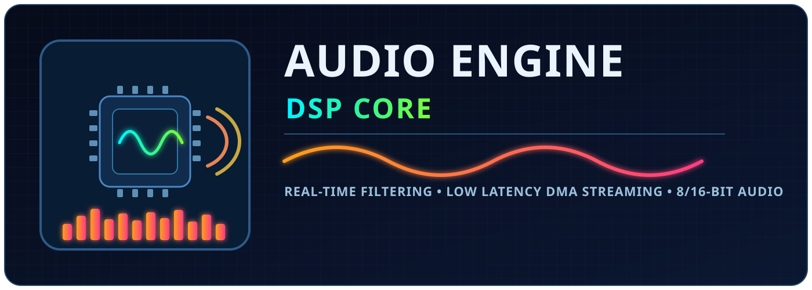

8-bit / 16-bit
Dual PCM format support with mono and stereo modes.
STM32 AUDIO PLAYBACK ENGINE
A reusable audio engine for STM32 with I2S + DMA streaming, runtime filter control, and polished playback behavior for embedded products.
Open source under the MIT License. Use it, modify it, and ship it in your own products.

Dual PCM format support with mono and stereo modes.
Double-buffered streaming designed for reliable real-time playback.
LPF, DC filtering, soft clipping, fades, and optional Air Effect.
Dial in low-pass aggressiveness, volume response, and playback fades at runtime without recompiling firmware.
Fast lookup for common setup and playback tasks.
Browse the API by category and symbol name.
Guidance for non-STM32 or less-compatible environments.
Response curves, specs, and technical notes.